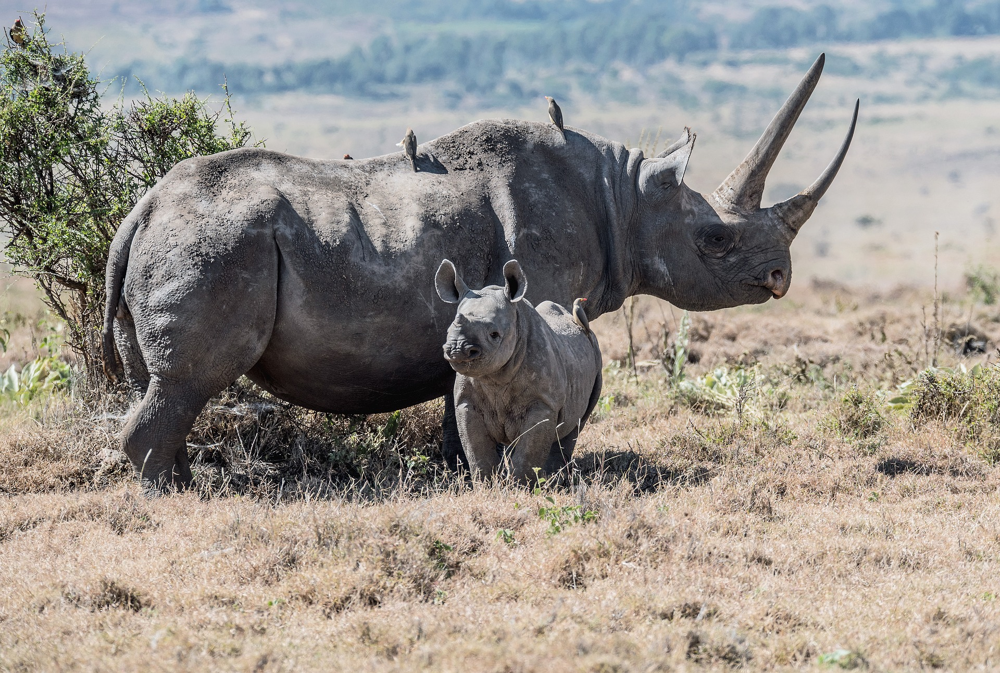
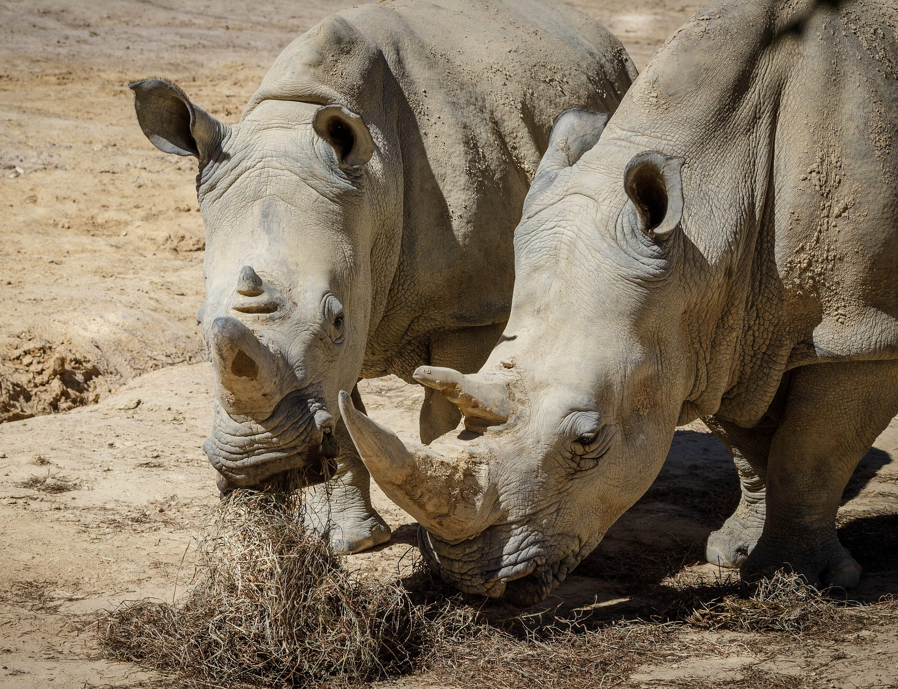
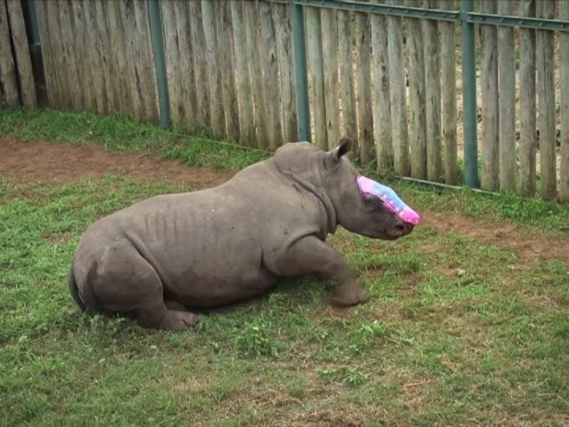
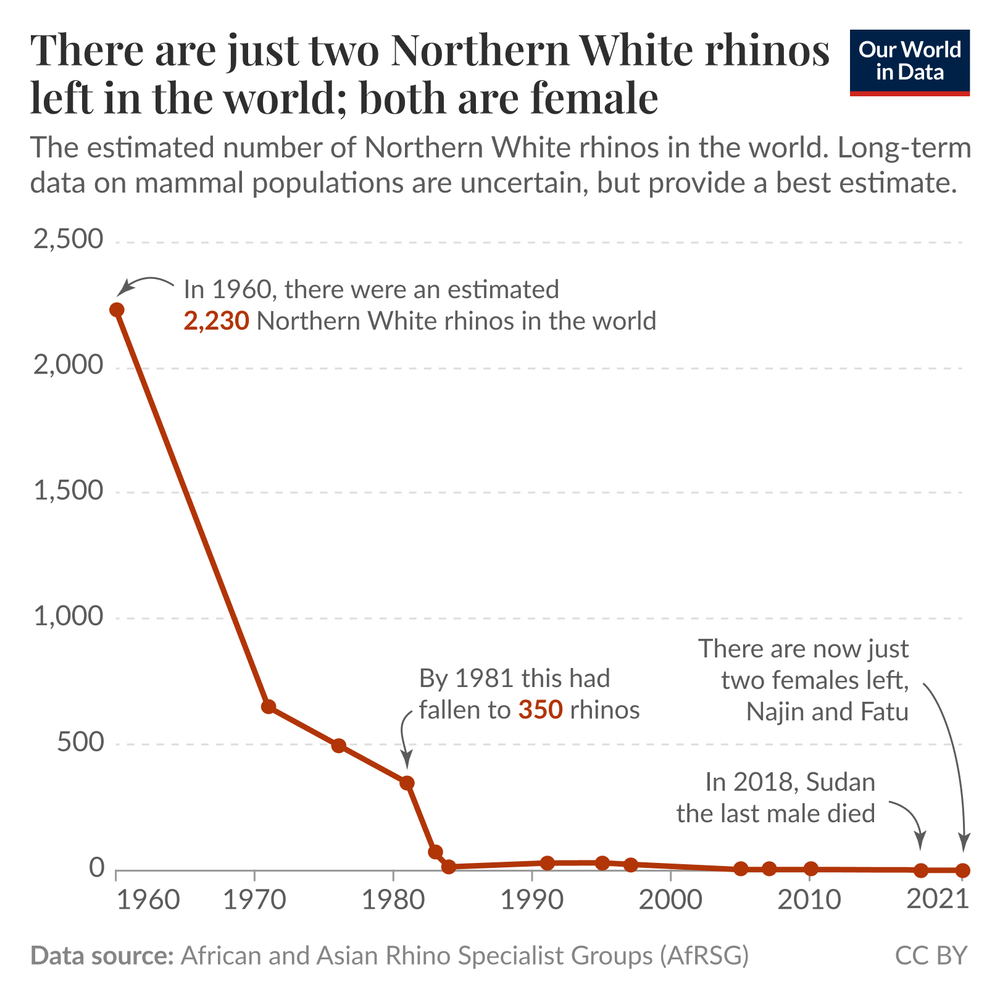

The Northern White Rhino




About the Rhino
There are, unfortunately, only two Northern White Rhino’s left. They are both female, a mom and daughter named Najin and Fatu. They are currently in Ol Pejeta Conservancy in Kenya under 24 hour, armed guard surveillance. White Rhino’s are native to Africa, including South Africa, Namibia, and Zimbabwe. They were once also found in Northern African countries, including the Democratic Republic of the Congo, South Sudan, Central African Republic, Chad, Sudan, and Uganda. Northern White Rhino’s inhibited the Africa’s grasslands, shrublands, and savannahs. They also adapted to graze on the shorter grasses and wallow in the muddy waterholes.
Endangerment Level
The Northern White Rhino subspecies is considered critically endangered. This is due to the fact that only two females remain. This causes the population to be classified as decreasing and urgently requires conservation efforts to secure their survival.
Threats
Throughout history, uncontrolled hunting was the major factor in the decline of the White Rhino population. Currently, the main threat is hunters stealing the White Rhino’s horns, poaching. The White Rhino is very vulnerable or easy targets for poachers because they are unaggressive and calm as well as they live in herds. This makes it easier for poachers to find multiple targets.
Prevention
The WWF takes part in strengthening local and international law enforcement to bring justice to the illegal act of poaching and illegal trading of the horns, and crimes against Rhinos. They also market monitor, research and advocacy as well as collaborating with online and transport companies to help them identify and remove rhino and other illegal wildlife products. They are trying to set up a rhino horn DNA database system contribute to forensic investigation scenes to strengthen prosecution cases. There are also programs for people to donate to conservation efforts to help the Northern White Rhino or endangered animals in general.
Statistics
